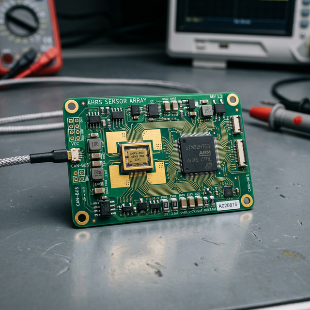

AHRS/PFD basics
Module Objectives
- Contrast the physical mechanics of a traditional gyro with a solid-state MEMS sensor.
- Detail the specific data distribution role of the Air Data Computer (ADC).
- Explain the consolidation architecture of a modern Primary Flight Display (PFD).
Why Does This Matter?

A modern glass-cockpit Cirrus SR22 powers up on the ramp, but the pilot's massive 10-inch Primary Flight Display (PFD) brutally shows a giant red "X" blazing across the entire attitude horizon and the heading compass rose simultaneously. In legacy aircraft, losing pitch, roll, and heading all at exactly the same time would basically mean the entire vacuum system and electrical bus exploded simultaneously. In the glass cockpit, this immense failure footprint points to exactly one specific box malfunctioning: the AHRS (Attitude and Heading Reference System). Knowing how modern solid-state computing consolidates a dozen scattered instruments into two master data processors (AHRS and ADC) shifts troubleshooting from chasing pneumatic hoses to querying digital databuses.
What You Need To Know
The Transition to the Glass Cockpit
Historically, an instrument panel was cluttered with heavy brass gyros, fragile vacuum pumps, and scattered pneumatic dial gauges—a configuration affectionately called the "Six-Pack." Modern avionics completely stripped out all mechanical moving parts and consolidated the physics into two highly advanced solid-state computers that digitally beam data onto high-definition screens.
Computer 1: Air Data Computer (ADC)
The ADC entirely replaces the mechanical plumbing of the altimeter, VSI, and airspeed indicator.
- The external pitot tube and static ports physically plumb directly into the back of the small ADC chassis.
- Internal digital pressure transducers violently sample the air pressures hundreds of times a second.
- The computer's processor mathematically crunches the raw barometric pressure data, compensating for intense temperature variables, to output brutally precise Digital Airspeed, Digital Altitude, and Vertical Speed Trend Vectors.
- It then blasts this data out onto an ARINC 429 databus directed to the displays.
Computer 2: The AHRS (Attitude & Heading)
The AHRS (Attitude and Heading Reference System) completely obliterates the heavy, spinning brass vacuum gyroscopes, replacing them with motionless microchips. It utilizes three core layers of solid-state MEMS (Micro-Electro-Mechanical Systems) sensors:
- 1. Solid-State Rate Gyroscopes: Microscopic tuning forks etched into silicon chips that measure exact angular rate of rotation (Pitch, Roll, Yaw) through Coriolis acceleration physics.
- 2. MEMS Accelerometers: Microchips that measure raw linear acceleration forces and gravity vectors to constantly re-establish the mathematical center "downward" vector.
- 3. Flux-Gate Magnetometers: Remote electronic sensors mounted way out in the wingtips (away from engine interference) that constantly measure Earth's 3D magnetic flux lines to provide incredibly stable, drift-free digital heading data.
The Aggregator: Primary Flight Display (PFD)
The PFD is merely a high-definition computer monitor. It does not calculate physics; it only draws pictures.
- It constantly listens to the data streams fired from the ADC and the AHRS simultaneously.
- It seamlessly stitches the digital altitude, airspeed, attitude horizon, and magnetic heading into one consolidated, hyper-fluid graphical interface directly in the pilot's line of sight.
System Visualization
graph TD
A[Pitot and Static Pressure Lines] --> B[Air Data Computer ADC]
C[MEMS Accels / Rate Gyros / Magnetometer] --> D[AHRS Computer]
B -->|Transmits Digital Airspeed and Altitude| E[Digital ARINC 429 Bus]
D -->|Transmits Digital Pitch, Roll, and Heading| E
E --> F[Primary Flight Display PFD]
F -->|Displays| G[Integrated Horizon, Speed Tape, Altimeter Tape, and Compass Rose]
style E fill:#1e40af,stroke:#1e3a8a,stroke-width:2px,color:#fff
style G fill:#166534,stroke:#14532d,stroke-width:2px,color:#fff
On The Job
When troubleshooting a glass PFD boasting multiple red X's, analyze the pattern utilizing architectural logic. If only the Altitude and Airspeed tapes are violently red X'd, but the Attitude Horizon is moving perfectly level, the screen is fine—your ADC box has crashed, isolating the fault. Conversely, if the Horizon is a sprawling red X but the altimeter is working, the AHRS box has crashed. Never arbitrarily rip the $15,000 PFD screen out of the dash assuming the display is broken; the blank screen is just accurately reporting that the remote computing sensors in the avionics bay have violently stopped talking to it.
Reference Terms
Air Data Computer (ADC)
A computer connected to the pitot-static system that processes ram air and static pressure to calculate airspeed and altitude data, supplying this information to the Primary Flight Display in a glass-cockpit system.
MEMS sensors in EFIS
Micro-Electro-Mechanical Systems (MEMS) gyroscopes and accelerometers used in Electronic Flight Instrument Systems to measure attitude, heading, and motion without moving mechanical parts.
Instruments Replaced by PFD
A modern Primary Flight Display (PFD) replaces six traditional instruments: airspeed indicator, attitude indicator, altimeter, vertical speed indicator, heading indicator, and turn coordinator.
AHRS Sensor Suite
An Attitude and Heading Reference System (AHRS) uses three types of solid-state sensors: rate gyroscopes (angular rate), accelerometers (linear acceleration), and magnetometers (magnetic heading) — no spinning mechanical gyros.
AHRS (Attitude and Heading Reference System)
A heavily sophisticated solid-state computer utilizing motionless microchips to calculate highly accurate pitch, roll, and magnetic heading vectors.
ADC (Air Data Computer)
An advanced digital LRU that converts raw analog pitot-static pneumatic pressures into hyper-precise digital airspeed, vertical speed, and altitude databus streams.
MEMS (Micro-Electro-Mechanical Systems)
The revolutionary solid-state sensing technology embedding microscopic mechanical accelerometers and tuning forks directly into rigid semiconductor silicon chips.
PFD (Primary Flight Display)
The master cockpit glass display synthesizing AHRS and ADC databus feeds into a singular, highly integrated visual instrument cluster.
Assessment Check
The ADC mathematically converts raw air pressures into digital altitude and speed; the AHRS leverages motionless MEMS microchips to perfectly map aircraft orientation; and the PFD aggressively stitches these databuses together into a single master display. ---